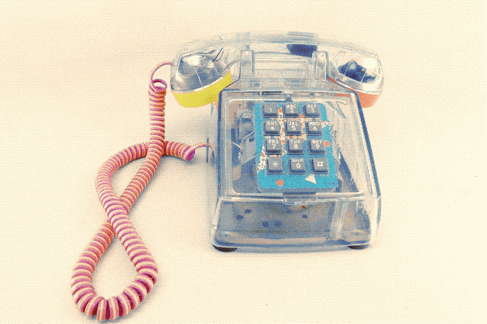

A Garden of Clear Plastic
from the 1990s-2000s

There is something very human and playful about this genre of technology. It's nostalgic futurism, speaking to a vision of technology as aesthetic, quirky, fun and brash.
The transparency of it is meaningful, how it both reveals and contains the wires and hardware, as if we could perhaps grasp how the tech works, instead of hiding the messiness behind an impersonal grey or black.